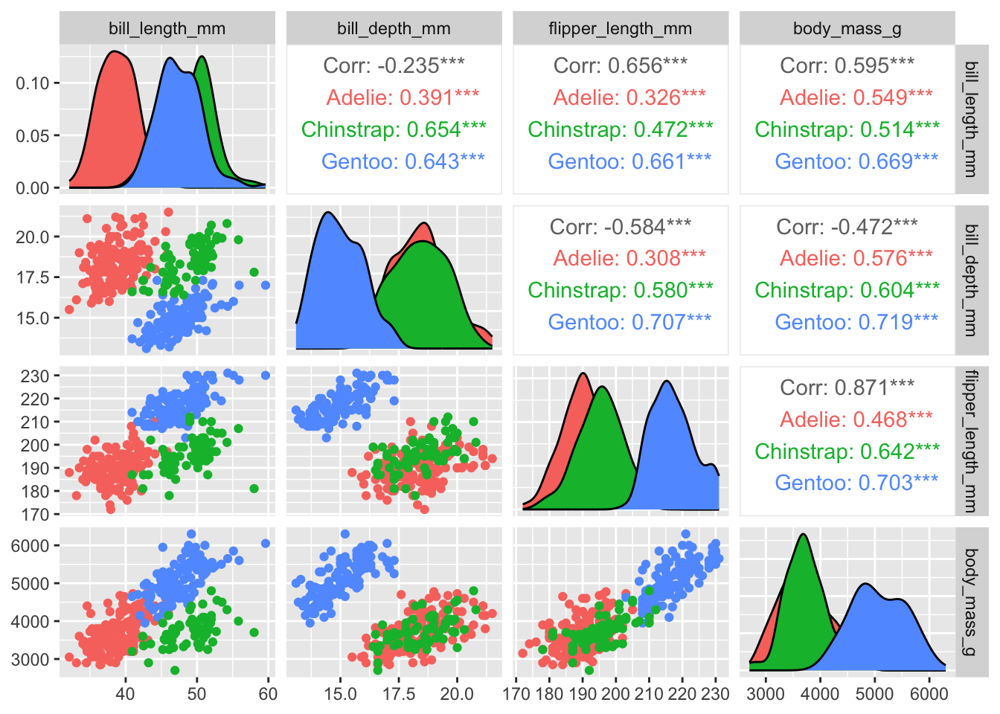

End interactive session 4B
# load libraries ----
library(GGally)
library(skimr)
library(palmerpenguins)
library(tidyverse)
# Always look at it ----
# View(penguins)
# Check the column names ----
names(penguins) [1] "species" "island" "bill_length_mm"
[4] "bill_depth_mm" "flipper_length_mm" "body_mass_g"
[7] "sex" "year" # Check the dimensions ----
dim(penguins) [1] 344 8# Get a summary ----
summary(penguins) species island bill_length_mm bill_depth_mm
Adelie :152 Biscoe :168 Min. :32.10 Min. :13.10
Chinstrap: 68 Dream :124 1st Qu.:39.23 1st Qu.:15.60
Gentoo :124 Torgersen: 52 Median :44.45 Median :17.30
Mean :43.92 Mean :17.15
3rd Qu.:48.50 3rd Qu.:18.70
Max. :59.60 Max. :21.50
NA's :2 NA's :2
flipper_length_mm body_mass_g sex year
Min. :172.0 Min. :2700 female:165 Min. :2007
1st Qu.:190.0 1st Qu.:3550 male :168 1st Qu.:2007
Median :197.0 Median :4050 NA's : 11 Median :2008
Mean :200.9 Mean :4202 Mean :2008
3rd Qu.:213.0 3rd Qu.:4750 3rd Qu.:2009
Max. :231.0 Max. :6300 Max. :2009
NA's :2 NA's :2 # Print the first 6 lines ----
head(penguins) # A tibble: 6 × 8
species island bill_length_mm bill_depth_mm flipper_length_mm body_mass_g
<fct> <fct> <dbl> <dbl> <int> <int>
1 Adelie Torgersen 39.1 18.7 181 3750
2 Adelie Torgersen 39.5 17.4 186 3800
3 Adelie Torgersen 40.3 18 195 3250
4 Adelie Torgersen NA NA NA NA
5 Adelie Torgersen 36.7 19.3 193 3450
6 Adelie Torgersen 39.3 20.6 190 3650
# ℹ 2 more variables: sex <fct>, year <int># Print the last 6 lines ----
tail(penguins) # A tibble: 6 × 8
species island bill_length_mm bill_depth_mm flipper_length_mm body_mass_g
<fct> <fct> <dbl> <dbl> <int> <int>
1 Chinstrap Dream 45.7 17 195 3650
2 Chinstrap Dream 55.8 19.8 207 4000
3 Chinstrap Dream 43.5 18.1 202 3400
4 Chinstrap Dream 49.6 18.2 193 3775
5 Chinstrap Dream 50.8 19 210 4100
6 Chinstrap Dream 50.2 18.7 198 3775
# ℹ 2 more variables: sex <fct>, year <int># Make a pairplot ----
GGally::ggpairs(penguins)
# Make a histogram of penguin flipper lengths ----
ggplot(data = penguins, aes(x = flipper_length_mm)) +
geom_histogram()